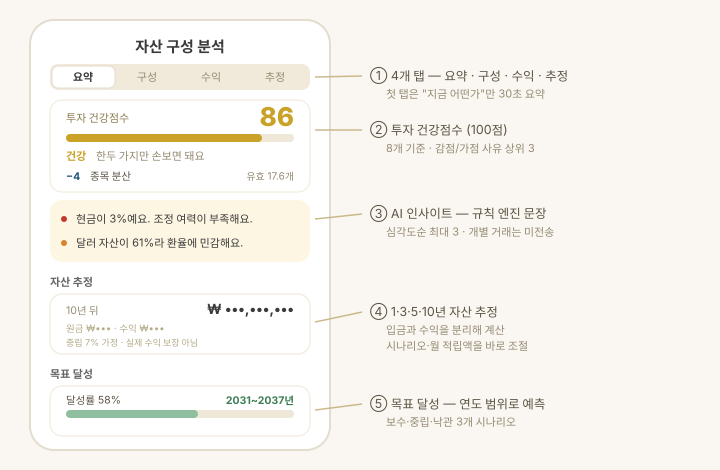
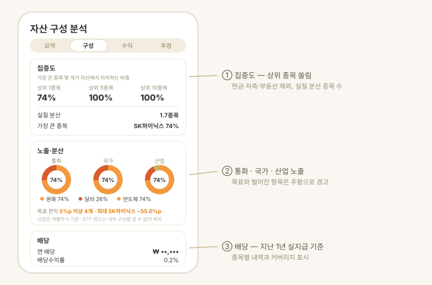

대시보드 → 자산 구성을 탭하면 열리는 화면입니다. 단순 조회를 넘어 "내 자산은 건강한가?" 와 "다음에 무엇을 해야 하는가?" 에 답하는 것이 목표입니다.
화면은 네 개 탭으로 나뉘고, 첫 탭(요약)은 지금 상태를 30초 안에 파악하도록 구성됩니다.
| 탭 | 담는 내용 |
|---|---|
| 요약 | 투자 건강점수 · AI 인사이트 · 전체 평가손익 |
| 구성 | 집중도 · 국가·산업 배분 · 배당 · 종류별 상세 |
| 수익 | 기간 수익 · 최대 낙폭 · 투자 성향 · 종목 손익 |
| 추정 | 1·3·5·10년 자산 추정 · 목표 달성 · 개선 제안 |

투자 건강점수
포트폴리오를 100점으로 채점하고, 점수를 깎거나 올린 사유 상위 3개를 함께 보여줍니다.
- 8개 기준 — 종목 분산 · 자산군 분산 · 현금 비중 · 통화 분산 · 수익률 · 변동성 · 목표 비중 준수 · 목표 진척.
- 분산은 개수가 아니라 쏠림으로 잽니다. 균등하게 나눈 10종목과 "한 종목 90% + 9종목"은 같은 점수를 받지 않습니다(유효 종목 수).
- 데이터가 없는 기준은 빼고 정규화합니다. 총자산 기록이 아직 없다고 점수가 깎이지 않습니다.
- 구조적 위험은 상한으로 막습니다. 한 종목이 30%를 넘으면 다른 기준이 만점이어도 총점이 제한됩니다.
AI 인사이트
지표를 종합해 지금 눈에 띄는 것을 자연어로 짚어줍니다.
- 규칙 엔진이 심각도 순으로 최대 3개 문장을 만들고, 같은 종류(집중도·현금 등)는 하나만 냅니다.
- 예: "현금이 3%예요. 조정 여력이 부족해요." · "상위 3개 종목이 전체의 52%예요."
- 심화 분석은 요약 지표만 AI에 전달하며 개별 거래·계좌 정보는 보내지 않습니다 (자세한 원칙은 AI 자산 점검).
집중도 · 국가 · 산업 · 배당

- 집중도 — 가장 큰 종목 몇 개가 자산에서 차지하는 비중입니다. 상위 1종목 12% · 상위 5종목 42% · 상위 10종목 61% 처럼 읽습니다(한 종목이 12%, 큰 5종목이 42%). 함께 표시되는 실질 분산은 "비중을 고르게 나눴다면 몇 종목에 나눈 셈인가" 를 뜻합니다 (클수록 잘 분산됨 — 한 종목에 몰릴수록 종목 수가 많아도 이 값은 작아집니다). 현금·저축·부동산은 빼고 사고팔 수 있는 종목만 계산합니다.
- 국가 배분 — 상장 거래소로 판별합니다. 단, ETF는 상장 국가가 아니라 투자 대상으로 봅니다 (예: 한국 상장 미국 지수 ETF는 미국으로 분류).
- 산업 배분 — 개별주식의 업종으로 분류합니다. ETF·펀드는 내부 구성을 알 수 없어 빠지므로, 몇 %를 기준으로 잰 값인지 커버리지를 함께 표시합니다.
- 배당 — 지난 12개월 실지급 배당 기준의 예상 연 배당과 배당수익률입니다(미래 예측 아님). 배당 정보가 있는 종목만 세고, 수익률의 분모도 그 종목들의 평가액이라 커버리지를 함께 보여줍니다.
자산 추정 · 목표 달성
- 1·3·5·10년 추정 — 현재 자산과 월 적립액으로 미래 자산을 계산합니다. 각 시점에 원금(현재+적립)과 수익 기여를 나눠 보여줘 복리 효과를 체감할 수 있습니다.
- 입금과 수익을 분리합니다. 자산 증가에 섞인 입금을 걷어낸 순수 수익률만 성장에 반영해, 적립을 성장으로 착각하지 않습니다.
- 시나리오와 월 적립액을 바로 조절하면 네 시점 숫자가 즉시 바뀝니다(보수 4% · 중립 7% · 낙관 10%).
- 목표 달성 — 설정에서 목표 자산(또는 FIRE 목표)을 넣으면 달성률과 예상 도달 시점을 연도 범위로 보여줍니다("2031~2037년"). 목표일을 정하면 진척이 건강점수에도 반영됩니다.
- 모든 추정은 가정에 따른 계산이며 실제 수익을 보장하지 않습니다.
개선 제안
- 자산군 비중이 가드레일(현금 하한, 단일 종목·자산군·코인 상한)을 벗어나면 되돌리는 최소 조정을 제안합니다.
- 적용했을 때의 건강점수를 함께 보여줍니다("83점 → 89점").
- 담을 곳이 없으면 팔라고 하지 않습니다 — 갈 곳 없는 매도로 현금만 쌓이는 조언을 하지 않습니다.
- 계좌·종목별 차이는 자산배분에서 이어서 확인합니다. 실제 매매는 사용자가 증권사에서 직접 합니다.
알아두면 좋은 것
- 배당·국가·산업은 하루 한 번 종목 정보를 받아 캐시합니다. 앱을 처음 켜면 잠시 뒤 채워집니다.